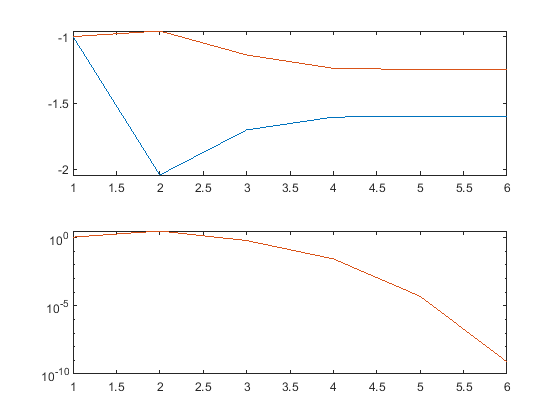
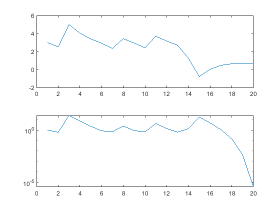
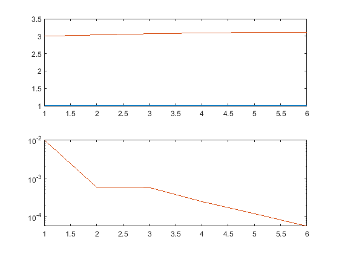
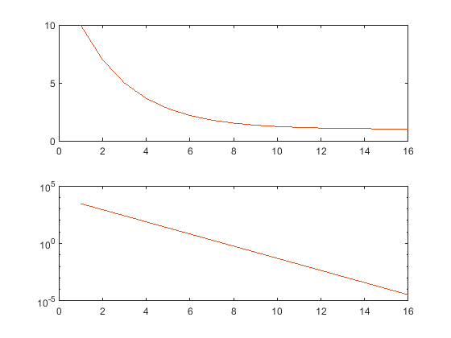

Contents
1a)
close all;
clear;
clc;
x0 = -1;
y0 = -1;
initial_value = [x0;y0];
syms x y;
jac_a(x,y) = jacobian(func1(x,y), [x y]);
sol = NewtonsMethodTemplate(@func1, jac_a, initial_value, 1e-7);
iterations = 1:size(sol, 2);
iters = size(sol,2);
vals = zeros(size(initial_value, 1), iters);
for k = 1:iters
cell = num2cell(sol(:,k));
value = func1(cell{:});
vals(:,k) = norm(value, Inf);
end
subplot(211)
plot(iterations, sol);
subplot(212)
semilogy(iterations, vals);

1b
close all;
clear;
clc;
func_b = @(x) (x-1)*(x-2)*(x-3)+1;
syms x;
jac_b(x) = jacobian(func_b(x), x);
disp(simplify(jac_b));
x0 = 3;
sol = NewtonsMethodTemplate(func_b, simplify(jac_b), x0, 1e-4, 100);
iterations = 1:size(sol, 2);
iters = size(sol,2);
vals = zeros(size(x0, 1), iters);
for k = 1:iters
value = func_b(sol(:, k));
vals(:,k) = norm(value, Inf);
end
subplot(211)
plot(iterations, sol);
subplot(212)
semilogy(iterations, vals);
3*x^2 - 12*x + 11
symbolic function inputs: x

1c)
close all;
clear;
clc;
func_c = @(x, y) [x-1 + (cos(y)*x+1)*cos(y);
-x*sin(y)*(cos(y)*x+1)];
syms x1 x2;
jac_c(x1, x2) = jacobian(func_c(x1, x2), [x1, x2]);
disp(simplify(jac_c));
x0 = [1; 3];
sol = NewtonsMethodTemplate(func_c, simplify(jac_c), x0, 1e-4, 50);
iterations = 1:size(sol, 2);
iters = size(sol,2);
vals = zeros(size(x0, 1), iters);
for k = 1:iters
cell = num2cell(sol(:, k));
value = func_c(cell{:});
vals(:,k) = norm(value, Inf);
end
subplot(211)
plot(iterations, sol);
subplot(212)
semilogy(iterations, vals);
[ cos(x2)^2 + 1, -sin(x2)*(2*x1*cos(x2) + 1)]
[ -sin(x2)*(2*x1*cos(x2) + 1), -x1*(cos(x2) - x1 + 2*x1*cos(x2)^2)]
symbolic function inputs: x1, x2

1d
close all;
clear;
clc;
func_d = @(x) 100*(x(2)-x(1))^2+(x(1)-1)^4;
syms x1 x2;
grad_d(x1,x2) = jacobian(func_d([x1;x2]), [x1, x2])';
jac_grad_d(x1, x2) = jacobian(grad_d(x1,x2), [x1, x2]);
x0 = [10;10];
sol = NewtonsMethodTemplate(grad_d, simplify(jac_grad_d), x0, 1e-4, 100);
iterations = 1:size(sol, 2);
iters = size(sol,2);
vals = zeros(size(x0, 1), iters);
for k = 1:iters
cell = num2cell(sol(:,k));
value = grad_d(cell{:});
vals(:,k) = norm(value, Inf);
end
subplot(211)
plot(iterations, sol(1,:));
hold on;
plot(iterations, sol(2,:));
subplot(212)
semilogy(iterations, vals);
